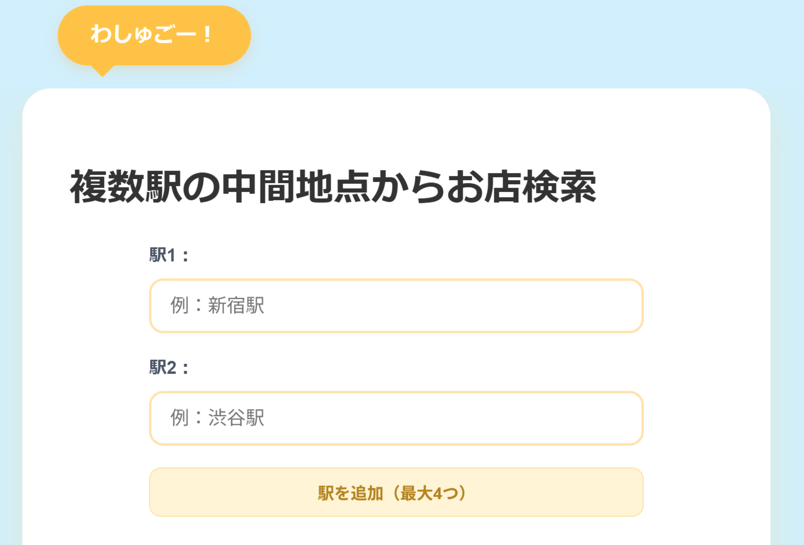

複数駅の中間地点からお店検索

1
出発地点を入力する
みんなの出発地点を入力すると、中心地点が自動で計算されます。
2
中間駅を調べる
計算された中心地点の候補が表示されます。
3
お店を探す
中間駅の周辺のお店が出てきます。一番下の欄からシェアすることもできます！

みんなの出発地点を入力すると、中心地点が自動で計算されます。
計算された中心地点の候補が表示されます。
中間駅の周辺のお店が出てきます。一番下の欄からシェアすることもできます！